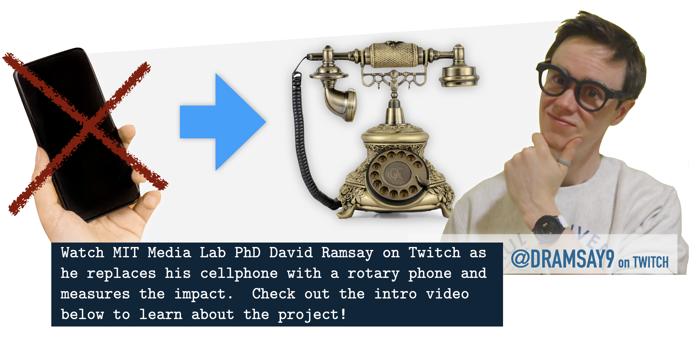

How do we measure depth of focus?
The depth of engagement in your tasks is difficult to measure. To unobtrusively estimate David' focus
state as he goes through his life, we are collecting a wide variety of data to understand the impact
of giving up his smartphone. The first set of these are physiological and behaviorial cues captured
from wearables-- things like heart rate and skin conductance and stillness. How quickly David notices a
periperhal cue and how well he estimates time passing are other cues we're using to estimate his depth of focus:
Of course, physiological data isn't enough on its own. We combine the physiological and behavioral cues with surveys and self-report from David, asking questions about how focused, alert, and emotional he is. We also look at objective patterns of interruption and task switching when it comes to his communication. Viewers on Twitch can contribute their observations as well!
Finally, we're also capturing a large host of video data. People in focused modes tend to lack self-awareness, and this can be correlated with a blank look or repetitive, unconscious movement. Video will help identify these facial expressions, body positioning, distractions in the environment, and task structure.
Twitch Stream:
An Intro to East Campus:
More information about some of the specific wearables and interventions David has designed and lived with in the famous East Campus hacker dorm at MIT is included below:
 Captivates Smartglasses
Captivates Smartglasses
 Equinox Smartwatch
Equinox Smartwatch
 Feather Leg Strap
Feather Leg Strap